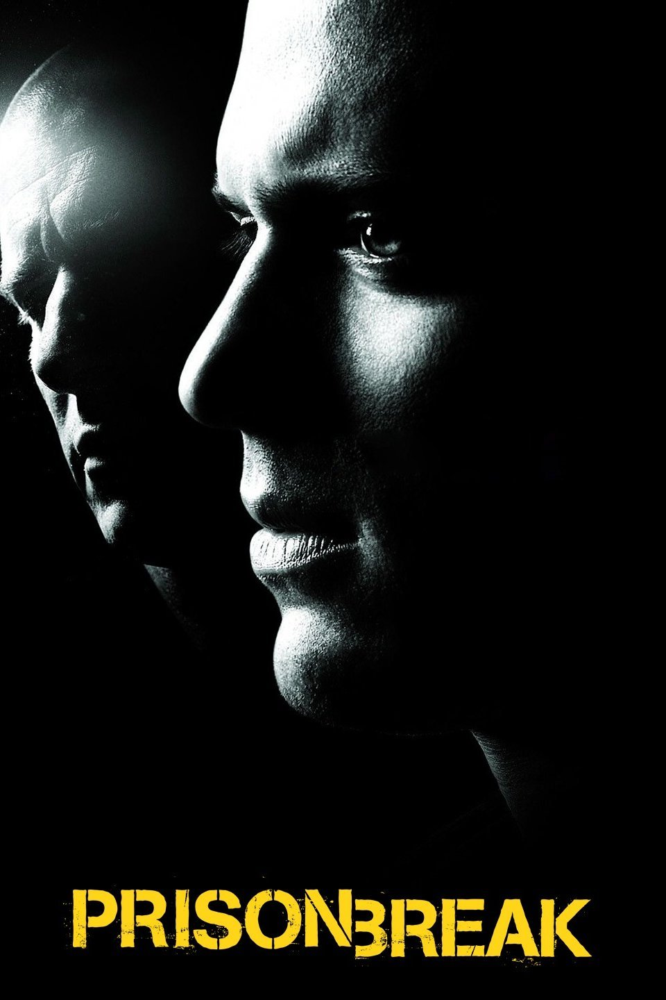

Prison Break (Aired 2005-2009)
Rating: 8.5/10
Age Restriction: TV-14
Based on a political conspiracy, an innocent man is sent for a death sentence whose only hope is his brother, who makes it his mission to purposely get himself sent into the same prison in order to break both of them from the inside out.
Creator: Paul Scheuring
Cast
Dominic Purcell as .... Lincoln Burrows
Wentworth Miller as .... Michael Scofield
Amaury Nolasco as .... Fernando Sucre
Robert Knepper as .... Theodore 'T-Bag' Bagwell
Sarah Wayne Callies as .... Dr. Sara Tancredi
Wade Williams as .... Brad Bellick
William Fichtner as .... Alex Mahone